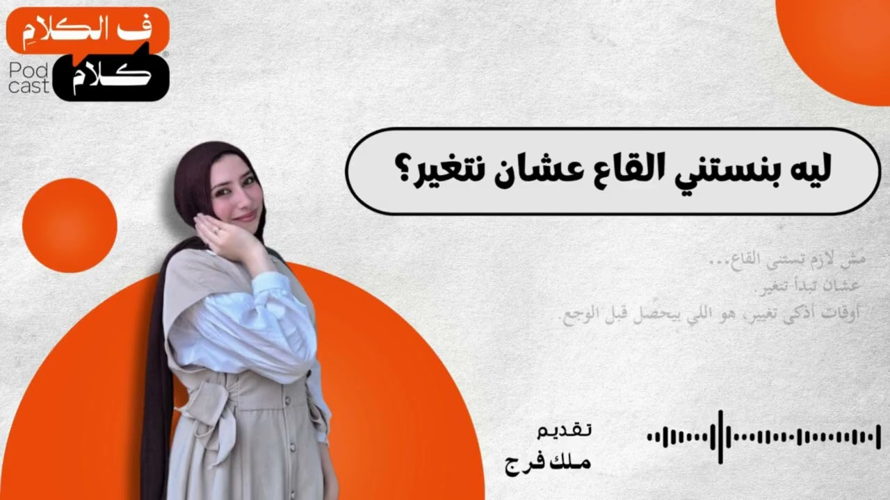

← الحلقات
عن الوجع والتغيير · الحلقة ٧

ليه بنستني القاع عشان نتغير؟
٢١ أغسطس ٢٠٢٦ · ٤:٠٤ · #القاع #عن_الوجع_والتغيير
إنت محتاج تتغير... ولا محتاج تتوجع أكتر؟
ليه بنفضل مستنيين الوجع، والخسارة، أو الانهيار عشان ناخد خطوة كنا عارفين من زمان إننا محتاجين ناخدها؟
في الحلقة دي من "ف الكلامِ كلام" بنتكلم عن التغيير، والـ comfort zone، وليه أوقات بنستنى القاع عشان نبدأ نطلع.
يمكن مش لازم الحياة تكسرك... عشان تسمعها.
يمكن مش لازم الحياة تكسرك... عشان تسمعها.
نص الحلقةاقرا النص
في تشبيه مشهور بيقول إنك لو حطيت ضفدع في مية سخنة هيحاول يهرب فورًا. لكن لو سخنت المية تدريجي ممكن يفضل مكانه. والغريب إن أوقات كتير إحنا بنعمل نفس الحاجة مش مع المية مع حياتنا.
بنتعود على التعب بالتدريج على الإهمال بالتدريج على العلاقات الغلط بالتدريج وعلى إننا مش مبسوطين بالتدريج. لحد ما نوصل لمرحلة نسأل فيها نفسنا أنا إزاي وصلت لهنا أصلًا؟ وساعتها خطر في بالي سؤال ليه أغلبنا مبيتغيرش إلا بعد ما يتوجع؟
ودي حاجة غريبة شوية. لأننا أوقات بنبقى عارفين بالظبط إيه اللي محتاج يتغير عارفين إن في حاجة غلط وعارفين إننا محتاجين نتحرك ومع ذلك مبنعملش حاجة. فنفضل مكاننا ونأجل ونأجل لحد ما الحياة تفضل تضغط فينا أكتر.
لحد ما نوصل للحظة نقول فيها خلاص كده كتير. فالسؤال هنا مش ليه بنتغير بعد الوجع؟ السؤال الحقيقي إحنا ليه بنستنى الوجع أصلًا؟ أعتقد إن جزء كبير من الإجابة إن الإنسان بطبيعته بيحب حتى لو هو مش مرتاح فيها.
طالما لسه قادر يستحمل بيكمل. لأن المجهول بيخوف حتى لو كان أحسن والمألوف بيطمن حتى لو كان بيأذينا. وعشان كده في ناس تفضل سنين في علاقة مش مرتاحة فيها وفي ناس تأجل أحلامها وفي ناس عارفة إن أسلوب حياتها بيتعبها لكن تقول بعدين.
والـ بعدين دي أوقات بتاخد سنين. والمشكلة إننا أوقات بنعتبر تحمّلنا إنجاز مع إنه كان مجرد تأجيل للتغيير. ودي من أكتر الحاجات اللي بتضحكنا على نفسنا. إننا نفتكر إننا أقوياء عشان مستحملين.
مع إن الحقيقة أوقات بتكون إننا بس متعودين. وأعتقد إن دي من أغرب الحاجات في الإنسان إن المعرفة لوحدها مش كفاية. كلنا تقريبًا عارفين حاجات محتاجين نغيرها لكن المشكلة عمرها ما كانت في المعرفة المشكلة كانت في إننا بنعرف لكن مبنبدأش عشان كده في ناس كتير مبتبدأش تهتم بصحتها غير بعد أزمة ومبتقدرش نفسها غير بعد خسارة ومبتعرفش قيمة الوقت غير بعد ما يضيع.
وأوقات الحقيقة بتكون مؤلمة شوية إحنا مش بنتغير لما نكون جاهزين إحنا بنتغير لما نبقى مضطرين. ودي يمكن من أكبر الأكاذيب اللي بنقولها لنفسنا إننا مستنيين الوقت المناسب. مع إن الوقت المناسب نادرًا ما بييجي لوحده.
بينما الحقيقة إننا مستنيين لحظة يبقى فيها وجع البقاء أكبر من خوف التغيير. ودي اللحظة اللي فجأة كل حاجة بتتحرك مش لأننا بقينا أشجع لكن لأن الوجع بقى أعلى من خوفنا. بس خليني أقولك حاجة مهمة إنت مش لازم تستنى القاع.
مش لازم تستنى الانهيار عشان تبدأ. ولا تستنى الخسارة عشان تراجع نفسك. ولا تستنى الندم عشان تاخد خطوة. لأن أوقات الذكاء الحقيقي إنك تتعلم من الإشارة مش من الكارثة. إنك تسمع الـ بدري قبل ما يبقى too late.
فلو في حاجة جواك عارف إنها محتاجة تتغير اسأل نفسك أنا مستني إيه؟ إيه الحاجة اللي لازم تحصل عشان أبدأ؟ ولو كانت إجابتك لما أتوجع أكتر يبقى يمكن دي علامة إنك محتاج تبدأ دلوقتي مش بعدين.
يمكن الوجع فعلًا بيغير ناس كتير لكن مش لازم يبقى هو المعلم الوحيد. مش لازم الحياة تكسرك عشان تسمعها. ومش لازم توصل للقاع عشان تقرر تطلع. لأن أذكى تغيير مش اللي بيحصل بعد الانهيار.
أذكى تغيير هو اللي بيحصل قبل ما توصل له أصلًا. ودلوقتي محتاجة أعرف إيه الحاجة اللي عارف من جواك إنها محتاجة تتغير لكن لسه بتقول بعدين. كانت معاكم ملك فرج، وأشوفكم في حلقة جديدة من ف الكلامِ كلام.